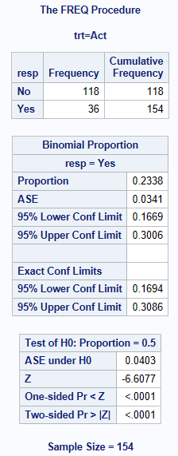
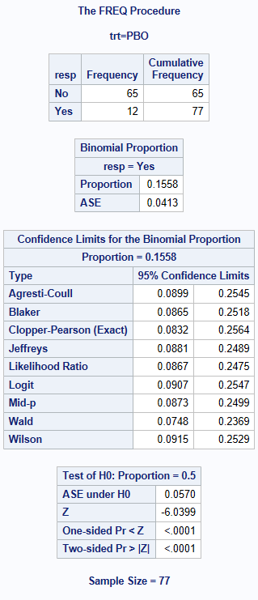
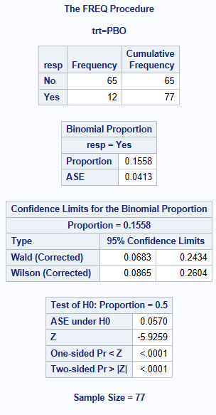

data adcibc2 (keep=trt resp) ;
set adcibc;
if aval gt 4 then resp="Yes";
else resp="No";
if trtp="Placebo" then trt="PBO";
else trt="Act";
run;Confidence intervals for Proportions in SAS
Introduction
There are many different methods of calculating a confidence interval for a proportion (percentage). For more information about these methods in R & SAS, including which performs better in different scenarios see Five Confidence Intervals for Proportions That You Should Know about1 and Confidence Intervals for Binomial Proportion Using SAS2
Proportions and Confidence intervals (CI) are commonly used with binary endpoints (e.g. ‘response’ vs ‘non-response’ or Yes vs No). This allows us to estimate the proportion in one treatment compared to the proportion in the other treatment. You can get estimates of the proportion and CI for proportion separately for each treatment or calculate the difference in proportion between the two treatments, and then calculate a CI for the difference in proportions. In this example, we will use 95% CIs.
Data used
The adcibc data stored here was used in this example, creating a binary treatment variable trt taking the values of Act or PBO and a binary response variable resp taking the values of Yes or No. For this example, a response is defined as a score greater than 4.
For more information about the data, see the corresponding R page.
Simple 2x2 cross tabulation using PROC FREQ
It is good practice to visualize your data. For this we can do a 2x2 table with percentages.
proc freq data=adcibc;
table trt*resp/ nopct nocol;
run;
Methods for Calculating Confidence Intervals for Proportions
SAS PROC FREQ in Version 9.4 can compute 11 methods to calculate CIs for proportions, an explanation of these methods and the code is shown below. See BINOMIAL3 for more information on SAS parameterization. It is recommended to always sort your data prior to doing a PROC FREQ.
Clopper-Pearson (Exact or binomial CI) Method
With Binary endpoint data (response/non-response), we make the assumption that the proportion of responders, has been derived from a series of Bernoulli trials. Trials (Subjects) are independent and we have a fixed number of repeated trials with an outcome of respond or not respond. This type of data follows the discrete binomial probability distribution, and the Clopper-Pearson4 (Exact) method uses this distribution to calculate the CIs. However, for large numbers of trials (subjects), the probability distribution becomes difficult to calculate and hence a variety of approximations were developed all with their pros and cons (depending on your data distribution).
Clopper-Pearson method is output by SAS as the default method, but you can also specify it using BINOMIAL(LEVEL="Yes" CL=CLOPPERPEARSON);
Normal Approximation (Wald or asymptotic CI) Method
The most commonly used alternative to the Clopper-Pearson (Exact) method is the asymptotic Normal Approximation (Wald) CI. In large random samples from independent trials, the sampling distribution of proportions approximately follows the normal distribution. The expectation of a sample proportion is the corresponding population proportion. Therefore, based on a sample of size \(n\), a \((1-\alpha)\%\) confidence interval for population proportion can be calculated using normal approximation as follows:
\(p\approx \hat p \pm z_\alpha \sqrt{\hat p(1-\hat p)}/{n}\), where \(\hat p\) is the sample proportion, \(z_\alpha\) is the \(1-\alpha/2\) quantile of a standard normal distribution corresponding to level \(\alpha\), and \(\sqrt{\hat p(1-\hat p)}/{n}\) is the standard error.
One should note that the approximation can become unreliable as the proportion of responders gets close to 0 or 1 (e.g. 0 or 100% responding), and alternative methods may be more suitable. In this scenario, common issues consist of:
it does not respect the 0 and 1 proportion boundary (so you can get a lower CI of -0.1 or an upper CI of 1.1%!)
the derived 95% CI may not cover the true proportion 95% of the time
Wald method can be derived with or without a Yate’s continuity correction. Applying the continuity correction is recommended when you have a small sample size or the estimated proportion is close to the tail ends (0 or 1). Applying Yate’s correction is considered more conservative but it’s not as conservative as Clopper-Pearson approach.
Normal approximation method is output by SAS as the default method, but you can also specify it using BINOMIAL(LEVEL="Yes" CL=WALD);
SAS also produces a continuity correction version of the Wald method, you can specify it using BINOMIAL(LEVEL="Yes" CL=WALD(CORRECT));
Wilson (score) Method
The Wilson (Score) method is an extension to the normal approximation, but commonly used where the proportion is close to 0 or 1 (100% responding). This is because the normal approximation can be unreliable at the tail ends of the distribution, and as such Wilson (Score) method can provide more reliable CIs. Wilson method can be derived with or without a Yate’s continuity correction. Applying the continuity correction is recommended when you have a small sample size or the estimated proportion is close to the tail ends (0 or 1). Applying Yate’s correction is considered more conservative (sometimes too conservative), but it’s not as conservative as Clopper-Pearson approach.
Wilson (score) method is output by SAS using BINOMIAL(LEVEL="Yes" CL=Wilson);
SAS also produces a continuity correction version of the Wald method, you can specify it using BINOMIAL(LEVEL="Yes" CL=WALD(CORRECT));
Agresti-Coull Method
Agresti-Coull Method is a ‘simple solution’ designed to improve coverage compared to the Wald method and still perform better than Clopper-Pearson particularly when the probability isn’t in the mid-range (0.5). It is less conservative whilst still having good coverage. The only difference compared to the Wald method is that it adds two successes and two failures to the original observations (increasing the sample by 4 observations).
Agresti-Coull method is output by SAS using BINOMIAL(LEVEL="Yes" CL=AGRESTICOULL);
LOGIT Method
Similar to Wald method in structure, but instead of using p=r/n, a logit transformation is applied: exp(log (p/(1-p))).
The logit method is often applied for odds ratios, but similar to the wald method it is often unreliable when n is small or p is close to 0 or 1.
LOGIT method is output by SAS using BINOMIAL(LEVEL="Yes" CL=LOGIT);
Binomial based MidP Method
The MidP method is similar to the Clopper-Pearson method, but aims to reduce the conservatism. It’s quite a complex method compared to the methods above.
MidP method is output by SAS using BINOMIAL(LEVEL="Yes" CL=MIDP);
Likelihood Ratio Method
Likelihood Ratio method is output by SAS using BINOMIAL(LEVEL="Yes" CL=LIKELIHOODRATIO);
Jeffreys Method
Jeffreys method is a Bayesian method calculated based on the non-informative Jeffreys prior for a binomial proportion. \[
(Beta (^k/_2 + ^1/_{2}, ^{(n-k)}/_2+^1/_2)_{\alpha}, Beta (^k/_2 + ^1/_{2}, ^{(n-k)}/_2+^1/_2)_{1-\alpha}
\] Jeffreys method is output by SAS using BINOMIAL(LEVEL="Yes" CL=Jeffreys);
Blaker Method
The Blaker method is a less conservative alternative to the Clopper-pearson exact test. It is also an exact method, but derives the CI by inverting the p-value function of an exact test.
The Clopper-pearson CI’s are always wider and contain the Blaker CI limits. It’s adoption has been limited due to the numerical algorithm taking longer to compute compared to some of the other methods especially when the sample size is large. NOTE: Klaschka and Reiczigel5 is yet another adaptation of this method.
BLAKER method is output by SAS using BINOMIAL(LEVEL="Yes" CL=BLAKER);
Altman Newcombe Method6
Let p=r/n, where r= number of responses, and n=number of subjects, q=1-p, and z= the appropriate value from standard normal distribution:
\[
z{_1-\alpha/2}
\]For example, for 95% confidence intervals, alpha=0.05, using standard normal tables, z in the equations below will take the value =1.96. Calculate 3 quantities
\[ A= 2r+z^2 \]
\[ B=z\sqrt(z^2 + 4rq) \] \[ C=2(n+z^2) \]The Altman Newcombe method calculates the confidence interval (Low to High) as: (A-B)/C to (A+B)/C
Available by manual calculations in SAS only.
Bayesian HPD Method
The Bayesian Highest Posterior Density interval, consists of drawing from the posterior distribution and forming a credible interval/region that has the shortest interval among all of the Bayesian credible intervals.
Available by manual calculations in SAS only.
Example Code using PROC FREQ
By adding the option BINOMIAL(LEVEL="Yes") to your ‘PROC FREQ’, SAS outputs the Normal Approximation (Wald) and Clopper-Pearson (Exact) confidence intervals as two default methods, derived for the Responders = Yes. If you do not specify the LEVEL you want to model, then SAS assumes you want to model the first level that appears in the output (alphabetically).
It is very important to ensure you are calculating the CI for the correct level! Check your output to confirm, you will see below it states resp=Yes !
The output consists of the proportion of resp=Yes, the Asymptotic SE, 95% CIs using normal-approximation method, 95% CI using the Clopper-Pearson method (Exact), and then a Binomial test statistic and p-value for the null hypothesis of H0: Proportion = 0.5.
proc sort data=adcibc;
by trt;
run;
proc freq data=adcibc ;
table resp/ nopct nocol BINOMIAL(LEVEL="Yes");
by trt;
run;

By adding the option BINOMIAL(LEVEL="Yes" CL=<name of CI method>), the other CIs are output as shown below. You can list any number of the available methods within the BINOMIAL option CL=XXXX separated by a space. However, SAS will only calculate the WILSON and WALD or the WILSON(CORRECT) and WALD(CORRECT). SAS wont output them both from the same procedure.
BINOMIAL(LEVEL="Yes" CL=CLOPPERPEARSON WALD WILSON AGRESTICOULL JEFFREYS MIDP LIKELIHOODRATIO LOGIT BLAKER)will return Agresti-Coull, BLAKER, Clopper-pearson(Exact), WALD(without continuity correction) WILSON(without continuity correction), JEFFREYS, MIDP, LIKELIHOODRATIO, and LOGITBINOMIAL(LEVEL="Yes" CL=ALL);will return Agresti-Coull, Clopper-pearson (Exact), Jeffreys, Wald(without continuity correction), Wilson (without continuity correction)BINOMIALc(LEVEL="Yes" CL=ALL);will return Agresti-Coull, Clopper-pearson (Exact), Jeffreys, Wald (with continuity correction), Wilson(with continuity correction)BINOMIALc(LEVEL="Yes" CL=WILSON(CORRECT) WALD(CORRECT));will return Wilson(with continuity correction) and Wald (with continuity correction)
proc freq data=adcibc;
table resp/ nopct nocol
BINOMIAL(LEVEL="Yes"
CL= CLOPPERPEARSON WALD WILSON
AGRESTICOULL JEFFREYS MIDP
LIKELIHOODRATIO LOGIT BLAKER);
by trt;
run;

proc freq data=adcibc;
table resp/ nopct nocol
BINOMIAL(LEVEL="Yes"
CL= WILSON(CORRECT) WALD(CORRECT));
by trt;
run;

SAS output often rounds to 3 or 4 decimal places in the output window, however the full values can be obtained using SAS ODS statements. ods output binomialcls=bcl; and then using the bcl dataset, in a data step to put the variable out to the number of decimal places we require.
10 decimal places shown here ! lowercl2=put(lowercl,12.10);
Reference
Five Confidence Intervals for Proportions That You Should Know about
Clopper,C.J.,and Pearson,E.S.(1934),“The Use of Confidence or Fiducial Limits Illustrated in the Case of the Binomial”, Biometrika 26, 404–413.
Klaschka, J. and Reiczigel, J. (2021). “On matching confidence intervals and tests for some discrete distributions: Methodological and computational aspects,” Computational Statistics, 36, 1775–1790.
Statistics with Confidence 2nd Edition, Altman, Machin, Bryant, Gardner 2002